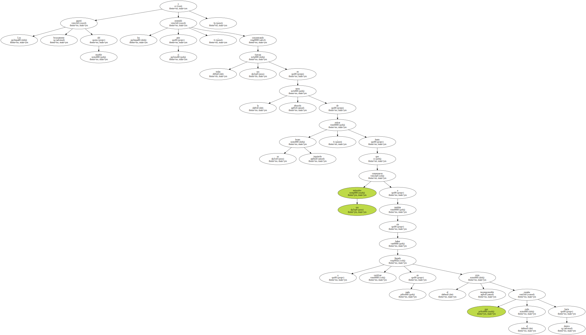
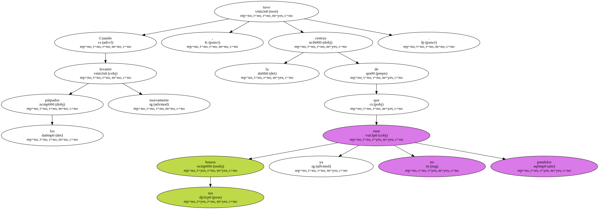
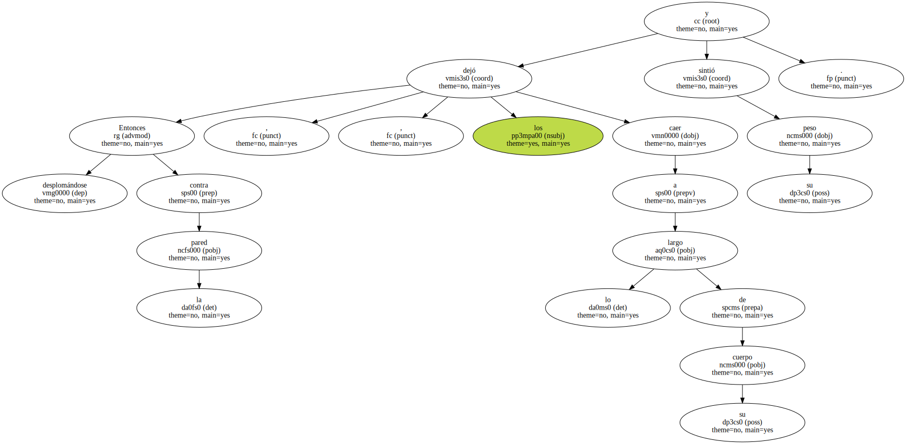
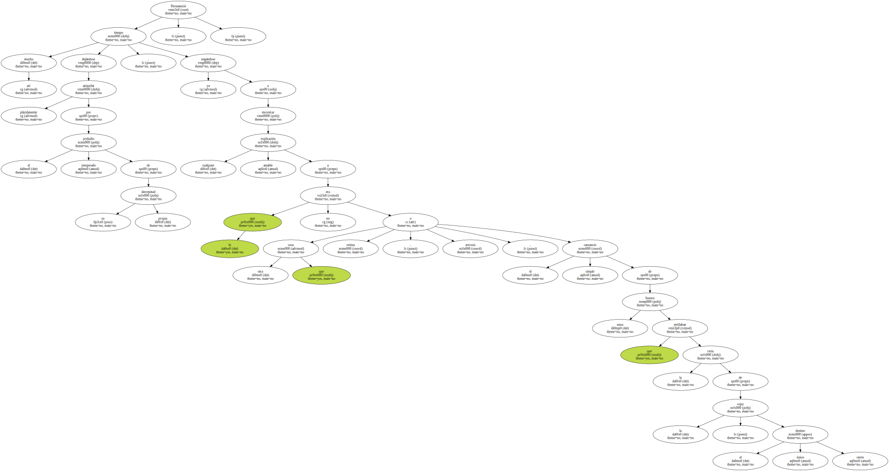
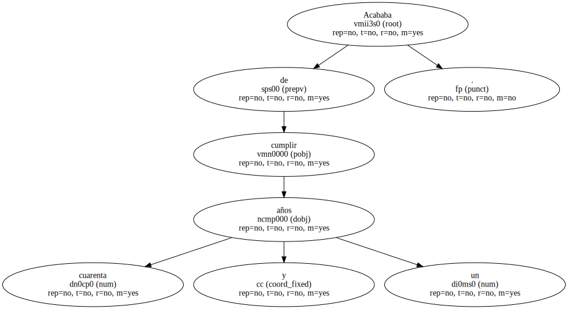
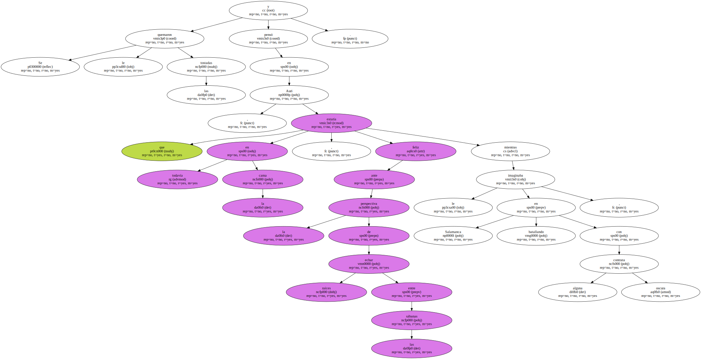
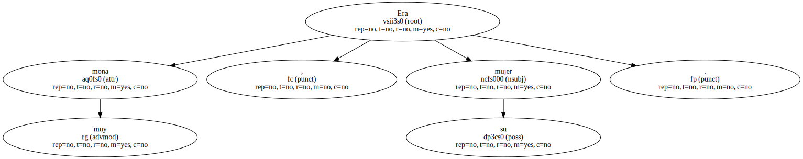
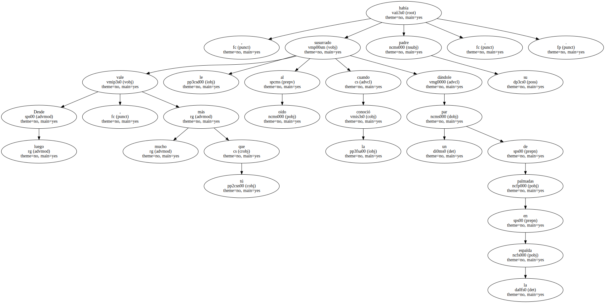
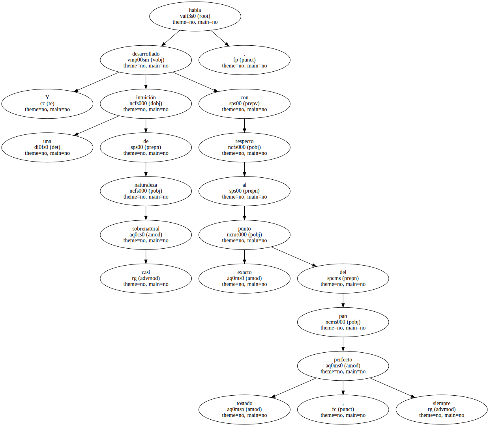
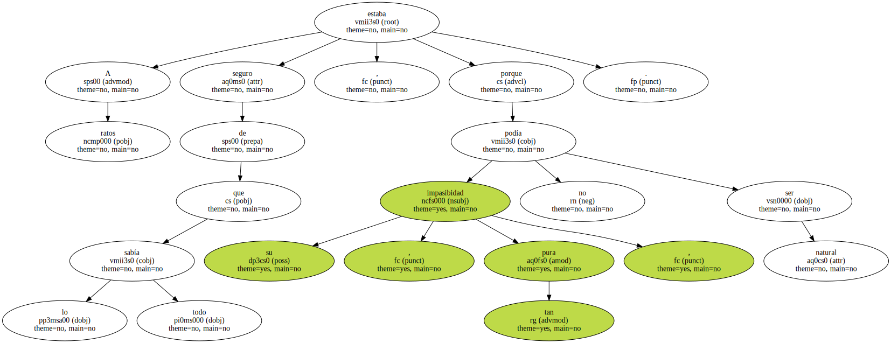

Los apartó bruscamente del mueble y los extendió ante sí , concentrando todas sus fuerzas en la absurda tarea de estirar su brazo izquierdo , hasta que sus músculos comenzaron a temblar sin haber llegado a rectificar en nada el incomprensible vicio que cunaba el codo hacia dentro.
Caminó unos pasos con los brazos extendidos y cerró los ojos , como un ciego sagaz en su vigilia de falso sonámbulo.

Cuando levantó los párpados nuevamente , tuvo la certeza de que sus brazos ya no eran paralelos.
Entonces , desplomándose contra la pared , los dejó caer a lo largo de su cuerpo y sintió su peso.
Permaneció así mucho tiempo , dejándose aniquilar plácidamente por el inesperado preludio de su propia decrepitud , negándose ya a encontrar cualquier explicación amable a lo que no era otra cosa que reúma , o artrosis , el simple cansancio de unos huesos que enfilaban la recta de la vejez , el único destino cierto.
Acababa de cumplir cuarenta y un años.
Se le quemaron las tostadas y pensó en Auri , que estaría todavía en la cama , feliz ante la perspectiva de echar raíces entre las sábanas mientras le imaginaba en Salamanca , batallando con alguna oscura contrata.
Era muy mona , su mujer.
Desde luego , vale mucho más que tú , le había susurrado al oído su padre cuando la conoció , dándole un par de palmadas en la espalda.
Y había desarrollado una intuición de naturaleza casi sobrenatural con respecto al punto exacto del pan tostado , siempre perfecto.
No la echaba de menos.

A ratos estaba seguro de que lo sabía todo , porque su impasibidad , tan pura , no podía ser natural.
